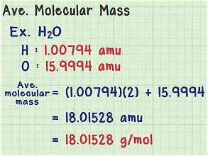
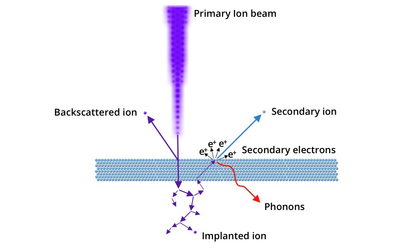

Positive ion beam
| Vietnamese | NOUN10. Chùm tia ion dương |
|---|---|
| English | Positive ion beam |
| Pronunciation | /ˈpɑːzətɪv ˈaɪən biːm/ |
| Word type | noun (as labelled in the PDFs) |
Topic 3 — Meaning (Vietnamese)
Chùm ion mang điện tích dương chuyển động theo một hướng xác định
Meaning (English)
A stream of positively charged ions moving in a particular direction (Chùm ion mang điện tích dương chuyển động theo một hướng xác định).
Example
The positive ion beam is directed through the instrument. (Chùm tia ion dương được hướng đi qua thiết bị.)
Images from the PDFs


